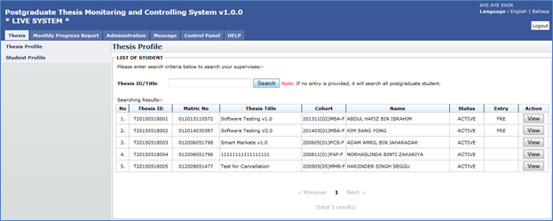

Thesis Profile listed all the supervisee under supervisor. Plus, the Supervisor can also view all the detail regarding supervisee. Search supervisee by Thesis ID/Title.

Figure 6: Student Programme Tab
Steps:-
- Click on the Thesis tab on the system Top panel section.
- The Thesis Profile menu will be displayed on the system Left panel and click on it.
- Enter Thesis ID or Title, then click Search button to view the searching result.
- Then click View button to proceed. Refer Student Profile